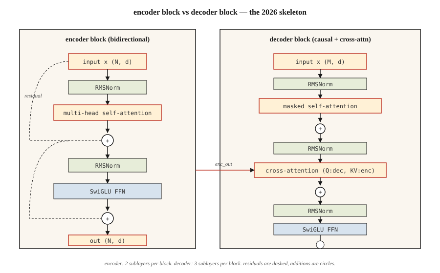

The Full Transformer — Encoder + Decoder
Attention is the star. Everything else — residuals, normalization, feed-forward, cross-attention — is the scaffolding that lets you stack it deep.
- Type
- Build
- Languages
- Python
- Prerequisites
- Phase 7 · 02 (Self-Attention), Phase 7 · 03 (Multi-Head Attention), Phase 7 · 04 (Positional Encoding)
- Time
- ~75 minutes
#The Problem
A single attention layer is a feature extractor, not a model. One matmul per layer is not enough capacity for language. You need depth — and depth breaks without the right plumbing.
The 2017 Vaswani paper packaged six design decisions that turned one attention layer into a stackable block. Every transformer since — encoder-only (BERT), decoder-only (GPT), encoder-decoder (T5) — inherits the same skeleton. In 2026 the blocks have been refined (RMSNorm, SwiGLU, pre-norm, RoPE) but the skeleton is identical.
This lesson is the skeleton. Next lessons specialize it — 06 for encoders, 07 for decoders, 08 for encoder-decoder.
#The Concept

#The six pieces
- Embedding + positional signal. Tokens → vectors. Position injected via RoPE (modern) or sinusoidal (classic).
- Self-attention. Every position attends to every other. Masked in decoders.
- Feed-forward network (FFN). Position-wise two-layer MLP:
W_2 · activation(W_1 · x). Expansion ratio 4× by default. - Residual connection.
x + sublayer(x). Without this, gradients vanish past ~6 layers. - Layer normalization.
LayerNormorRMSNorm(modern). Stabilizes the residual stream. - Cross-attention (decoder only). Queries come from the decoder, keys and values from the encoder output.
Watch a vector flow through one block: attention mixes across positions, the residual carries it forward, the FFN transforms it, and norm keeps the stream stable.
#Encoder block (used by BERT, T5 encoder)
x → LN → MHA(self) → + → LN → FFN → + → out
^ ^
| |
└── residual ──┘Encoder is bidirectional. No masking. All positions see all positions.
#Decoder block (used by GPT, T5 decoder)
x → LN → MHA(masked self) → + → LN → MHA(cross to encoder) → + → LN → FFN → + → outDecoder has three sublayers per block. The middle one — cross-attention — is the only place information flows from encoder to decoder. In a pure decoder-only architecture (GPT), cross-attention is omitted and you just have masked self-attention + FFN.
#Pre-norm vs post-norm
Original paper: x + sublayer(LN(x)) vs LN(x + sublayer(x)). Post-norm lost favor around 2019 — it is harder to train deeply without careful warmup. Pre-norm (LN before sublayer) is the 2026 default: Llama, Qwen, GPT-3+, Mistral all use it.
#The 2026 modernized block
Vaswani 2017 shipped LayerNorm + ReLU. Modern stacks replaced both. What production blocks actually look like:
| Component | 2017 | 2026 |
|---|---|---|
| Normalization | LayerNorm | RMSNorm |
| FFN activation | ReLU | SwiGLU |
| FFN expansion | 4× | 2.6× (SwiGLU uses three matrices, total params match) |
| Position | Sinusoidal absolute | RoPE |
| Attention | Full MHA | GQA (or MLA) |
| Bias terms | Yes | No |
RMSNorm drops the mean-centering of LayerNorm (one fewer subtraction), which saves compute and is empirically at least as stable. SwiGLU (Swish(W1 x) ⊙ W3 x) consistently outperforms ReLU/GELU FFN by ~0.5 point ppl in the Llama, PaLM and Qwen papers.
#Parameter count
For one block with d_model = d and FFN expansion r:
- MHA:
4 · d²(Q, K, V, O projections) - FFN (SwiGLU):
3 · d · (r · d)≈3rd² - Norms: negligible
At d = 4096, r = 2.6, layers = 32 (roughly Llama 3 8B), total: 32 · (4·4096² + 3·2.6·4096²) ≈ 32 · (16 + 32) M = ~1.5B parameters per layer × 32 ≈ 7B (plus embeddings and head). Matches published counts.
#Build It
#Step 1: the building blocks
Using the tiny Matrix class from Lesson 03 (copied to this file for independence):
layer_norm(x, eps=1e-5)— subtract mean, divide by std.rms_norm(x, eps=1e-6)— divide by RMS. No mean subtraction.gelu(x)andsilu(x) * W3 x(SwiGLU).ffn_swiglu(x, W1, W2, W3).encoder_block(x, params)anddecoder_block(x, enc_out, params).
See code/main.py for the full wiring.
#Step 2: wire a 2-layer encoder and a 2-layer decoder
Stack them. Pass the encoder output into every decoder cross-attention. Add a final LN before the output projection.
def encode(tokens, params):
x = embed(tokens, params.emb) + sinusoidal(len(tokens), params.d)
for block in params.encoder_blocks:
x = encoder_block(x, block)
return x
def decode(target_tokens, encoder_out, params):
x = embed(target_tokens, params.emb) + sinusoidal(len(target_tokens), params.d)
for block in params.decoder_blocks:
x = decoder_block(x, encoder_out, block)
return x#Step 3: run forward on a toy example
Feed a 6-token source and a 5-token target through. Verify the output shape is (5, vocab). No training — this lesson is about the architecture, not the loss.
#Step 4: swap in RMSNorm + SwiGLU
Replace LayerNorm and ReLU-FFN with RMSNorm and SwiGLU. Confirm shapes still match. This is the 2026 modernization with one function substitution.
#Use It
The PyTorch/TF reference implementations: nn.TransformerEncoderLayer, nn.TransformerDecoderLayer. But most 2026 production code rolls its own block because:
- Flash Attention is called inside attention, not via
nn.MultiheadAttention. - GQA / MLA are not in the stdlib reference.
- RoPE, RMSNorm, SwiGLU are not the PyTorch defaults.
HF transformers has clean reference blocks you should read: modeling_llama.py is the canonical 2026 decoder-only block. It's ~500 lines and worth walking through once.
Encoder vs decoder vs encoder-decoder — when to pick:
| Need | Pick | Example |
|---|---|---|
| Classification, embeddings, QA over text | Encoder-only | BERT, DeBERTa, ModernBERT |
| Text generation, chat, code, reasoning | Decoder-only | GPT, Llama, Claude, Qwen |
| Structured input → structured output (translation, summarization) | Encoder-decoder | T5, BART, Whisper |
Decoder-only won language because it scales cleanest and handles both comprehension and generation. Encoder-decoder is still best when the input has a clear "source sequence" identity (translation, speech recognition, structured tasks).
#Ship It
See outputs/skill-transformer-block-reviewer.md. The skill reviews a new transformer block implementation against the 2026 defaults and flags missing pieces (pre-norm, RoPE, RMSNorm, GQA, FFN expansion ratio).
#Exercises
- Easy. Count the parameters in your encoder_block at
d_model=512, n_heads=8, ffn_expansion=4, swiglu=True. Validate by implementing the block and usingsum(p.numel() for p in block.parameters()). - Medium. Switch from post-norm to pre-norm. Initialize both and measure the activation norm after 12 stacked layers on random input. Post-norm's activations should explode; pre-norm's should stay bounded.
- Hard. Implement a 4-layer encoder-decoder on a toy copy task (copy
xreversed). Train 100 steps. Report loss. Swap in RMSNorm + SwiGLU + RoPE — does loss drop?
#Key Terms
| Term | What people say | What it actually means |
|---|---|---|
| Block | "One transformer layer" | Stack of norm + attention + norm + FFN, wrapped in residual connections. |
| Residual | "Skip connection" | x + f(x) output; enables gradient flow through deep stacks. |
| Pre-norm | "Normalize before, not after" | Modern: x + sublayer(LN(x)). Trains deeper without warmup gymnastics. |
| RMSNorm | "LayerNorm without the mean" | Divide by RMS; one less op, same empirical stability. |
| SwiGLU | "The FFN everyone switched to" | Swish(W1 x) ⊙ W3 x → W2. Beats ReLU/GELU on LM ppl. |
| Cross-attention | "How the decoder sees the encoder" | MHA with Q from decoder, K/V from encoder outputs. |
| FFN expansion | "How wide the middle MLP is" | Ratio of hidden-size to d_model, usually 4 (LayerNorm) or 2.6 (SwiGLU). |
| Bias-free | "Drop the +b terms" | Modern stacks omit biases in linear layers; slight ppl improvement, smaller model. |
#Further Reading
- Vaswani et al. (2017). Attention Is All You Need — original block spec.
- Xiong et al. (2020). On Layer Normalization in the Transformer Architecture — why pre-norm beats post-norm deeply.
- Zhang, Sennrich (2019). Root Mean Square Layer Normalization — RMSNorm.
- Shazeer (2020). GLU Variants Improve Transformer — the SwiGLU paper.
- HuggingFace
modeling_llama.py— canonical 2026 decoder-only block.
Nice. That's 5 minutes of Transformers Deep Dive behind you.
Continue to BERT — Masked Language Modeling →